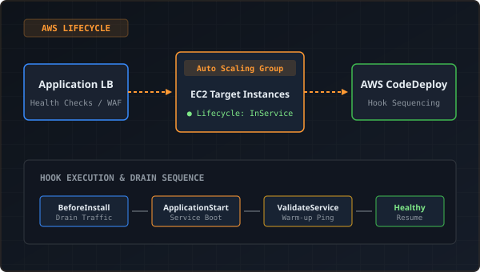

AWS Infrastructure • CI/CD
Deployment Reliability and Auto Scaling Lifecycle
Production deployments depend on coordination between deployment automation, instance initialization, and load balancer health checks. Diagnosed Auto Scaling Group instance launches, reviewed lifecycle hooks and deployment sequencing, and verified that newly launched replacement instances receive the expected application version and pass health checks before serving production traffic.
AWS EC2
Auto Scaling Groups
AWS CodeDeploy
Application Load Balancer
CloudWatch